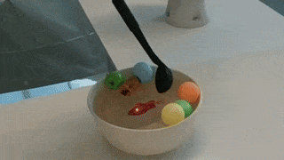
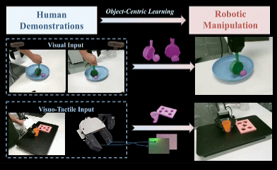
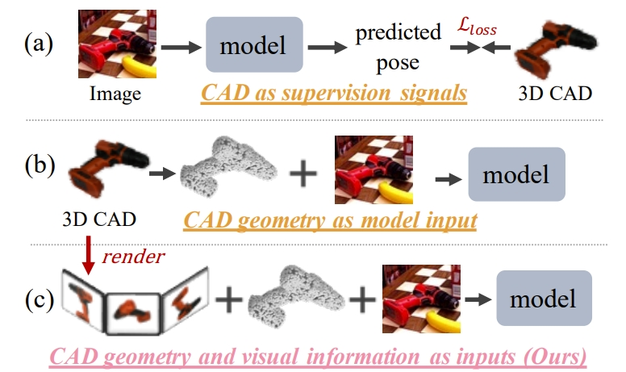
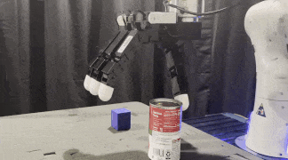
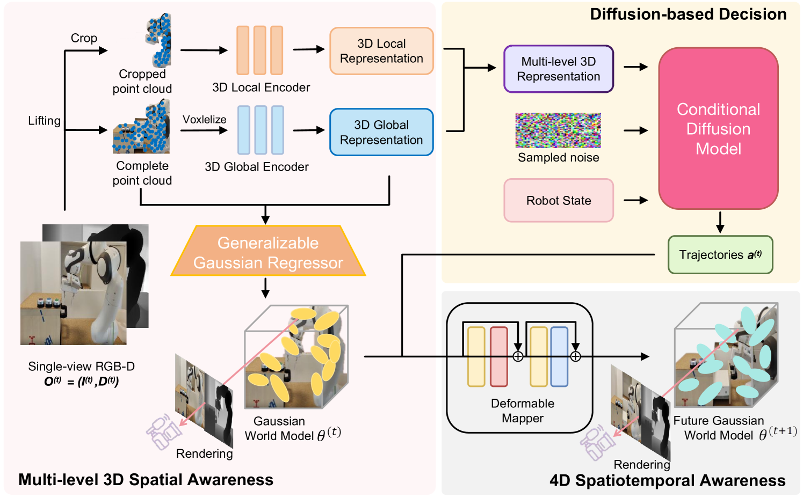
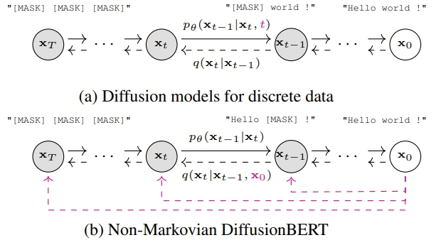

|
Kuanning Wang I'm currently a Master of Science student in the School of Computer Science at Fudan University, where I also received my bachelor’s degree. I'm advised by Prof. Yanwei Fu and Prof. Xiangyang Xue, and I am also fortunate to be mentored by Prof. Daniel Seita (USC) and Dr. Yuqian Fu. |
{kind=link}
ResearchI'm currently interested in VLA, Robot Learning, Multimodal and Embodied AI. |
|
 |
SCOOP'D: Learning Mixed-Liquid-Solid Scooping via Sim2Real Generative Policy
Kuanning Wang, Yongchong Gu, Yuqian Fu, Zeyu Shangguan, Sicheng He, Xiangyang Xue, Yanwei Fu, Daniel Seita ICRA, 2026project page / arXiv |
|
 |
OCRA: Object-Centric Learning with 3D and Tactile Priors for Human-to-Robot Action Transfer.
Kuanning Wang*, Ke Fan*, Yuqian Fu, Siyu Lin, Hu Luo, Daniel Seita, Yanwei Fu, Yu-Gang Jiang, Xiangyang Xue ICRA, 2026project page / arXiv |
|
 |
RAG-6DPose: Retrieval-Augmented 6D Pose Estimation via Leveraging CAD as Knowledge Base
Kuanning Wang, Yuqian Fu, Tianyu Wang, Yanwei Fu, Longfei Liang, Yu-Gang Jiang, Xiangyang Xue IROS, 2025project page / arXiv |
|
 |
Sequential Multi-Object Grasping with One Dexterous Hand
Sicheng He, Zeyu Shangguan, Kuanning Wang, Yongchong Gu, Yuqian Fu, Yanwei Fu, Daniel Seita IROS, 2025project page / arXiv |
|
 |
Spatial-Temporal Aware Visuomotor Diffusion Policy Learning.
Zhenyang Liu, Yikai Wang, Kuanning Wang, Longfei Liang, Xiangyang Xue, Yanwei Fu ICCV, 2025project page / arXiv |
|
 |
DiffusionBERT: Improving Generative Masked Language Models with Diffusion Models.
Zhengfu He, Tianxiang Sun, Qiong Tang, Kuanning Wang, Xuanjing Huang, Xipeng Qiu ACL, 2023project page / arXiv |
Academic Service |
Reviewer, RA-L 2025
Reviewer, IROS 2025 Reviewer, ICRA 2026 |

|
M.S. in Computer Science, Fudan University, Sep 2024 – Present. |
|
|
Research Intern, Agibot Research |
|
Feel free to steal this website's source code. Do not scrape the HTML from this page itself, as it includes analytics tags that you do not want on your own website — use the github code instead. Also, consider using Leonid Keselman's Jekyll fork of this page. |